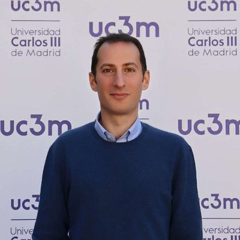

Andrea Ianiro
Conference Chair
Full Professor, Universidad Carlos III de Madrid
Andrea Ianiro is a Full Professor of Aerospace Engineering at Universidad Carlos III de Madrid and an ERC Consolidator Grantee. Trained at the University of Naples Federico II, he works on unsteady aerodynamics, turbulence and heat transfer, combining advanced experimental techniques — tomographic PIV and infrared thermography — with machine learning and modal analysis. His ERC project SPANDRELS pioneers event-based flow sensing. He has co-edited Experimental Aerodynamics (CRC Press, 2017) and Data-driven Fluid Mechanics (Cambridge University Press, 2022), is an associate editor of the International Journal of Heat and Mass Transfer, and serves on the scientific committees of several international flow-measurement conferences.
aianiro@ing.uc3m.es